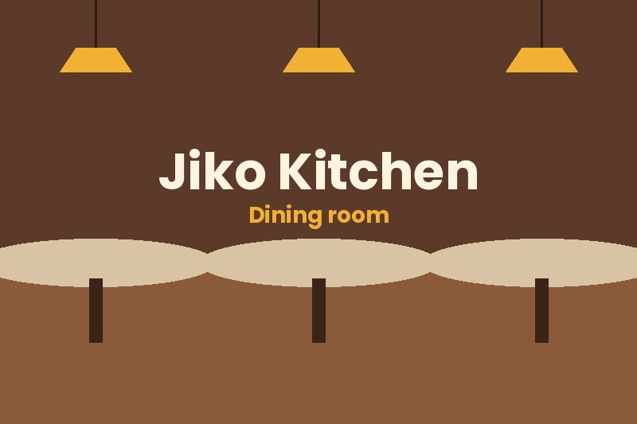

Nyama Choma
Slow-grilled goat meat served with kachumbari and ugali. Perfect for sharing with friends.
Price: KSh 950
Jiko Kitchen
At Jiko Kitchen we cook the meals you grew up with, using fresh ingredients from local farmers. Come in for lunch, dinner or a quick bite with friends.

Jiko Kitchen opened in 2022 in Kilimani, Nairobi. We started with one charcoal jiko and a simple idea: good Kenyan food should taste like it was made at home.
Today we serve over 200 customers a day, and we still cook everything fresh every morning.
Founder and Head Chef. Achieng learned to cook in her grandmother's kitchen in Kisumu.
Restaurant Manager. Brian makes sure every guest is welcomed and served on time.
Grill Chef. Faith is the reason our nyama choma keeps customers coming back.
Want to book a table or ask about catering? Send us a message and we will reply within 24 hours.
Argwings Kodhek Road, Kilimani, Nairobi